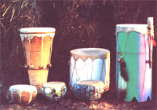
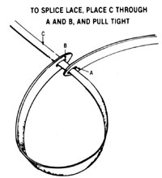

Do you like to make music and create beautiful things? You can combine both in this craft.
After years of experimenting with crafts as varied as weaving, kite making, and building electric dulcimers, my husband, Augie, and I have finally hit on the undertaking most suited to our temperaments: drum making! Appealing to both the artist and the musician in us, these simple instruments offer visual beauty and exciting sound. And because each creation is unique, we wait eagerly for each drumhead to dry so we can enjoy the new tone. What's more, our instruments sell in craft and music shops for $20 to $50 each, with occasional requests for custom-made models that bring in as much as $100!
But enough of our enthusiasm. Let's get on to your instruments and see how to make them!
COLLECTING YOUR MATERIALS
To construct a drum, you'll need some sort of a suitable body (more on that later), a leather punch, scissors or a cutting knife, and-since no form of tanned leather will serve your purpose well-a piece of rawhide. We order 2' X 3', ready-to-use rawhide swatches from our local hobby shop for $9.00 each. We're also lucky enough to have access to a couple of free goatskins per week from a farmer down the road. To remove the hair from these small and easy-to-handle hides, we soak them in a mixture of one can of lye to 15 gallons of water. Goatskins, however, are considerably thicker than purchased rawhide, so we use them only for larger, deep-toned tom-toms.
Of course, for most purists who wish to start from scratch by using totally untreated skin, a trip to the slaughterhouse is probably in order. There, fresh hides, roughly 6' X 8', can usually be bought for about $35. From personal experience, though, we don't recommend this route. First of all, the newly stripped skins weigh 75 to 85 pounds each and are slippery, gory, and all but unmanageable. Furthermore, our nauseating journey through the "kill room" to the salt pits where the skins were stacked sent us on a frantic search for vegetarian recipes! The rawhide then had to soak for three to five days (we used a 35gallon trash container), after which, our source claimed, the piece could be scraped free of hair and any remaining organic matter by "shaving" it with a file. We soon discovered, however, that we lacked the time, energy, and dexterity such a process calls for. (Perhaps those more experienced in this area will have greater success than we did.)
But though that task turned us off, searching out bodies for our instruments became one of our favorite pastimes. Nurseries offer a wide variety of ceramic and pottery containers that can make suitable drum bodies, as can the casks and wooden planters such outlets generally stock. Pipes, well casings, fittings, and tubes of nearly every dimension and material, from clay to plastic, can be found at local plumbing stores. (We've even made a fine drum from a $4.00, 1'-long piece of heating-duct pipe.) Furthermore, potter's seconds, flea markets, and garage sales should never be overlooked. As a matter of fact, because a drum can be either single-or double-headed, almost any hollow form will do. In our initial enthusiasm, both my sourdough-starter crock and an abandoned birdbath pedestal were transformed into percussion instruments! In addition, if you are fortunate enough to own a lathe, you can turn beautiful wooden bodies. (White cedar, or arborvitae, was highly favored for drums by the Chippewa Indians, who patiently whittled and burned out tree trunks.) Hollow logs that are rot-free and show no signs of splitting or cracking are also great drum bodies, but they aren't easy to find.
Most of these suggested bases require no work other than locating them. However, if you plan to use plastic duct pipe, sand its edges to prevent them from cutting the stretched skin. You also may want to decorate these rather plain-looking shells (we use bright acrylic paints); this, of course, you'll need to do before lacing on the drumhead.
CONSTRUCTING THE DRUM
Before you attach the skin to the body you've selected, the dry rawhide must be soaked for a minimum of four hours in a large container of cold water. (Hot water will cause the tissue to break down, which will destroy the drum's fine tone.) We usually soak our drumskins in the bathtub overnight. When the hide has absorbed enough water to become flexible and springy, we squeeze out the excess, as you'd squeeze a waterlogged sponge, and start lacing.
Each culture has developed its own unique style for attaching drumheads, and the lacing can become a very decorative feature, depending on one's inventiveness. For the sake of simplicity, I'll give directions for the two most common techniques.
First, place the rawhide swatch on a table or board and, using either scissors or a sharp knife, cut 1/4"-wide straps from around the skin's border to produce lengthy thongs. It you're making a very large instrument, cut the laces 1/2" wide or more.
Next, cut out a circular drumhead with a diameter 2" larger than that of the drum you wish to cover. If you're using a cylindrical form, such as duct pipe, you'll probably want to double-head it (that is, put a beating surface on each end). If so, cut out two heads of equal size.
Now, using a leather punch, make evenly spaced holes, no more than 2" apart and 1 from the drumhead's edge, all around the skin's circumference. Be sure, though, when using two pieces, that each has an equal number of holes. Center the drum body on top of one head, then place the other skin on top of the drum. A clean look is achieved by locating the upper holes directly over the bottom ones, but this is largely a matter of taste; if you choose a more random lacing pattern, it won't affect the ease of the task or the drum's sound in any way. Run the thong through the top slit, down through the bottom one, and then bring it up again diagonally to the next top hole. Continue this process around the drum, and if the end of your strip runs short, just attach another rawhide piece with a square knot, or splice it as shown in the accompanying illustration.
At this point, the thong will not yet be secured. Before tying it off, gently pull and tighten the head and lacing. Be careful not to stretch it too much, or the wet rawhide will tear. Keep working at it, going around the perimeter several times. Don't overdo this, though, because as the hide dries, it will tighten considerably. When the head's surface appears to be smooth and wrinkle-free and the thong is tight, but not taut, tie the two ends of the lace together where they meet.
Since we have access to a pottery source. most of our drums are one-sided, and we've found that single-head lacing is a pleasingly simple operation. Just invert the container over the prepunched circle of skin, then prepare half as many thongs as there are holes. We tie the first lace in a hole with a square knot ...bring it across the bottom of the base and up to the hole on the opposite side ...and secure it with another knot. After following this procedure around the body until all of the "sets" of holes have been laced, we check for surface smoothness and tighten up any loose knots.
Just recently we've added a new look to single-headed, earthen pottery drums. We drill evenly spaced holes around the edge of the pot and tie the drumhead on with separate thongs. Some instruments laced in this style can be seen in the accompanying photo.
If the container you choose has a lip, no lacing is required. First, make sure the surface is smooth and tight; next wrap a band of rawhide 1/2"-1" wide around the overlapping head and tie it.
Whatever the style of drum, you'll have to decide whether or not to trim off any extra hide that protrudes around the edges. If you do snip off the surplus, leave at least 1/4" around the lacing holes.
When drums are drying, double-headed versions must be placed so that the air can circulate over both heads. Keep in mind, too, that a drum must dry slowly and evenly, as a too-rapid dehydration would cause the skin to wrinkle, buckle, or pucker-and might even warp the frame. Therefore, place your creation in a warm room with a consistent temperature, but at some distance from any heat source. And, no matter how great the temptation, don't touch or thump the skin during the drying process. In 24 hours, your patience will be well rewarded. Your drum will be ready to be played on as much and as hard as the spirit moves you!
Some final notes: The tighter a head is stretched, the higher the drum's tone will be, though dampness and cold weather will tend to deaden the sound. Should the latter occur, just warm up the instrument near a stove for ten minutes, and the head and laces will tighten again.
ADDED TOUCHES
You may want to beat your drum by hand or with one or two sticks, and-as is the case with constructing the actual instrument-there are many ways to make such beaters. Moreover, the type of stick will vary the sound produced. Corks, Superballs, or handstitched suede "gloves" attached to dowels or chopsticks all work wonderfully and take only minutes to make.
Then too, decorating your instrument may prove to be as much fun as constructing it. Feathers, bells, beads, and paint can all be added. Some southwestern Native Americans even paint the drumheads, but to follow their example, you must apply the paint after the hide has dried, or the colors may run. However, in our opinion, a completed drum in its most simple form looks attractive as is and really doesn't need too much extra "embroidery" on it.
If you're inclined, as we were, to make more than one drum, you'll soon have a bunch of odd-size rawhide pieces, which can be turned into rattles. To do so, I use waxed linen thread to sew simple forms, such as a ball, leaving one end open. Then with a funnel I pour rice or popcorn into the soaked and wrung-out shape and let it dry overnight. Next day, I remove most of the filling ...insert a dowel ...bind the ball to it with a small strip of wet hide ...and let the rattle finish drying. These shakers make great additions to our percussion collection!
IDEAS GALORE
There's really no end to the variety of drums that can be made. In all cultures the world over, people have been entranced by rhythm-producing instruments, and they've left us traditional examples made from wood, horns, shells, pottery, baskets, gourds, and metal-with our generation adding plastic to that list. We've found, in fact, that plasticpipe drums sound as good as any of the others and are very inexpensive to make.
We've discovered, too, that reading about drums has been almost as fascinating as making our own. (We particularly liked Musical Instruments of the World: An Illustrated Encyclopedia from Diagram Group, Paddington Press Ltd., Two Continents Publishing Group, 1976; $29.95.) And our enthusiasm for our craft is far from waning. It seems we come up with a new idea almost every day, and we sincerely wish you all the excitement we've found in the course of rediscovering the world's oldest musical instruments.
|
 |
 |
|